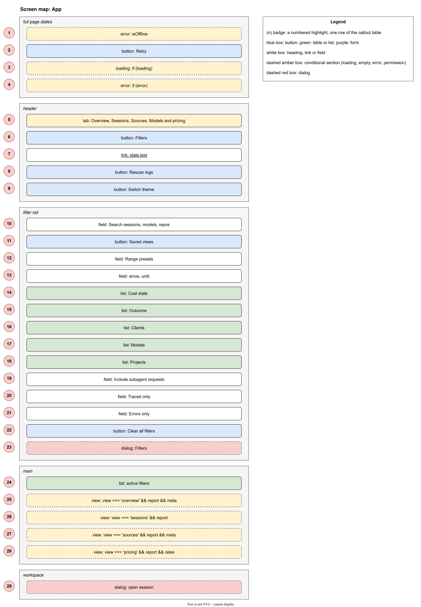

active approved inferred covers web/src/*, web/src/design-system/*
App Screen Map
This map shows the frame every view of the dashboard sits in. It lets a reader find where the views are switched, where the slice is filtered and where a rescan is started. It also shows the three full page states the reader sees before any data arrives.
What the diagram shows
- Before any view appears the shell can show three full page states: the offline card when the server is unreachable, a loading line, and an error card
web/src/App.tsx:251-277. - The header holds the view tabs, the narrow screen Filters button, the rate age notice, the rescan button and the theme switch
web/src/Header.tsx:74-134. - The filter rail holds search, saved views, the date range, the facet groups for cost state, outcome, clients, models and projects, three switches and the reset button
web/src/FilterRail.tsx:296-452. - The same rail opens as a sheet from the left on narrow screens
web/src/FilterRail.tsx:486-503. - The main area shows the active filter chips and exactly one of four views
web/src/App.tsx:320-339. - An open session adds the workspace beside the main area
web/src/App.tsx:342-353.
Capability and related functionality
The shell hosts Overview Screen, Sessions Screen, Sources Screen, Pricing Screen and Session Workspace Screen. The data flow behind it is explained in Web Overview and Web Workflows, and the views are navigated as shown in Web Screen Flow and Web Sitemap.
App Screen screen map

Code references
| Badge | Element | Code |
|---|---|---|
| 1 | isOffline error section |
web/src/App.tsx:253-253 |
| 2 | <OfflineCard Retry |
web/src/App.tsx:255-258 |
| 3 | if (loading) loading section |
web/src/App.tsx:263-263 |
| 4 | if (error) error section |
web/src/App.tsx:271-271 |
| 5 | <button Overview, Sessions, Sources, Models and pricing |
web/src/Header.tsx:79-84 |
| 6 | <Button Filters |
web/src/Header.tsx:98-98 |
| 7 | <button stale.text |
web/src/Header.tsx:105-107 |
| 8 | <Button Rescan logs |
web/src/Header.tsx:128-128 |
| 9 | <Button Switch theme |
web/src/Header.tsx:131-131 |
| 10 | <SearchField Search sessions, models, repos |
web/src/FilterRail.tsx:298-300 |
| 11 | <button Saved views |
web/src/FilterRail.tsx:190-194 |
| 12 | <ChipRow Range presets |
web/src/FilterRail.tsx:311-317 |
| 13 | <DateRange since, until |
web/src/FilterRail.tsx:320-325 |
| 14 | <FacetGroup Cost state |
web/src/FilterRail.tsx:334-338 |
| 15 | <FacetGroup Outcome |
web/src/FilterRail.tsx:342-346 |
| 16 | <FacetGroup Clients |
web/src/FilterRail.tsx:354-358 |
| 17 | <FacetGroup Models |
web/src/FilterRail.tsx:380-384 |
| 18 | <FacetGroup Projects |
web/src/FilterRail.tsx:406-410 |
| 19 | <SwitchRow Include subagent requests |
web/src/FilterRail.tsx:431-434 |
| 20 | <SwitchRow Traced only |
web/src/FilterRail.tsx:436-439 |
| 21 | <SwitchRow Errors only |
web/src/FilterRail.tsx:441-444 |
| 22 | <Button Clear all filters |
web/src/FilterRail.tsx:449-449 |
| 23 | <Sheet Filters |
web/src/FilterRail.tsx:486-489 |
| 24 | <FilterChips active filters |
web/src/App.tsx:327-327 |
| 25 | view === 'overview' && report && meta view section |
web/src/App.tsx:330-330 |
| 26 | view === 'sessions' && report view section |
web/src/App.tsx:333-333 |
| 27 | view === 'sources' && report && meta view section |
web/src/App.tsx:336-336 |
| 28 | view === 'pricing' && report && rates view section |
web/src/App.tsx:337-337 |
| 29 | <SessionWorkspace open session |
web/src/App.tsx:343-351 |